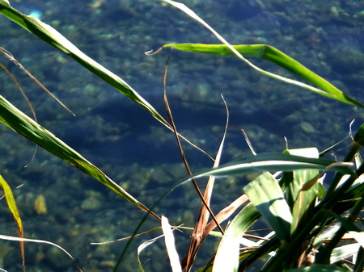
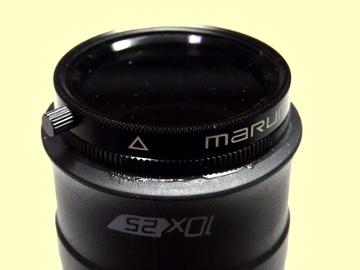

ティップス
便利な小道具 タスコ社製 モノキュラー ２代目 ESSENTIAL 10×25
去年、2018年の秋、何の気なしに本流の下流域にツーリングがてら川を見に行ったら、岸沿いの淀みに銀色の鱗を光らせた50cm級のニゴイ２尾と、70cmクラスの大ゴイを目撃してしまった。

これは！ と唸らされ、
『狙うしかあるまい....』
と、つぶやき、次回はタスコの単眼鏡を持って来なければなるまい、と思った。
ところが家に帰って久しぶりに釣り具入れから取り出して使ってみると、なぜかごく近距離50cm～3mくらいにしかピントが合わない。
『うーん？ こんな単純な機構なのに、なにゆえ故障するのか？』
と、不思議だったが、分解・自力修理も難しそうで、調べたらタスコでは、このモデルは今はもう販売していないらしい。他社からほとんど同じモデルが出ていたが、ここは、昔のよしみでタスコ社の製品を探してみた。
単眼鏡もピンキリで、国産有名メーカーの高いヤツは、10,000円近い値段のものもある。とてもそんなのは買えないので、
画像はアマゾンのサイトより引用
新型 タスコ tasco エッセンシャル ESSENTIAL 10×25 ブラック 単眼鏡 軽量
- サイズ:114×25mm 重量 :約70g
- 倍率:10倍(対物レンズ有効径25mm)
- 1000m先の視界96m
- ベルトループ付/ナイロンケース
というのを買った。まずまず手の届く範囲である。まぁ、光学製品は良いものを買っておくのが鉄則であるが、財布の薄さには為す術がない。倍率は 10倍もなくても、8倍くらいの方が手ブレが少なくて良いのだが、あいにくこのモデルしか無かった。
で、商品が到着した後、この単眼鏡の前端部に、なんとか偏光フィルターが付けられないものかと思案し、ノギスでレンズを保護しているゴム部分の内径・外径を測定し、各フィルターメーカーにメールで問い合わせたところ、
MARUMI PLフィルター 28mm C-PL ハンドル付 ビデオカメラ用
画像はアマゾンのサイトより引用
というのが良さそうだったので、ポチりとクリック。
偏光フィルターもなかなかの値段がすることに驚いた。中には単眼鏡本体を超えそうな品まである。(笑)
偏光フィルターが届いたのでさっそくタスコの前端部にはめてみると、なんと！ オーダーメイドしたかのごとく、ぴったりと装着できた。

数週間後、実際に川に持って行き、具合をテストしてみると、なかなかの性能だった。
フィルター外縁に付いているツマミを動かすと、偏光度合が変わり、効果無しから最大偏光まで調整できるのだが、これは現場でマークして、テープで固定した方が使い勝手が良いかなと思った。どのみち偏光効果しか求めていないのだから。
動作チェックののち、黒い色の接着剤で、ゴム+金属に対応しているセメダインスーパーX クリア ブラックにて接着して完成。
コンパクトなので、携帯も楽である。ただし、防水ではないので、それなりの対処が必要となる。水中に落っことさないよう気を付けよう！
ティップス 目次へ
サイトマップ
ホームへ
お問い合わせ